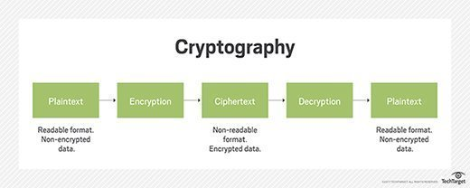

Information security and cyber law
Information Security
As we know, in a network or cyberspace there is always a threat of cyber attacks which may lead to loss and damages of our precious data and information. It is always necessary to be aware of such malicious activity. We need to adopt different measures while using a computer from such intentional and accidental activities. Thus, information security refers to the process of protecting our network infrastructure from unauthorized access, misuse, modification, destruction, or any malfunction. We can use several physical and software preventive measures to protect ourselves from such unethical activities. Information security helps to create a secure environment for computers, users, and programs.
Information security can mitigate security threats and security attacks. Security threats are possible dangers that might cause unwanted activities in our computer system to breach security and thus cause possible harm, whereas a security attack is an attempt to gain unauthorized access to destroy, expose, steal, or alter others' valuable data and information. These attacks can be triggered by malicious applications such as viruses, spyware, Trojan horses, worms, etc.
Information security is built around three major objectives:
- 1. Confidentiality
- It means information is available only for the authorized individual, that is, individuals or any other system cannot use or process others' information without proper authorization.
- 2. Integrity
- It indicates accuracy and completeness of data and information, which means without proper authorization, data and information cannot be tampered.
- 3.Availability
- It means information must always be available as per the requirement of the user. It generally refers to accessing our valuable data and information whenever required without delay.
Cryptography
The term cryptography is derived from the Greek word meaning “secret writing.” Cryptography is the art and science of hiding information. It provides security for information and is used for secure communication between individuals, government agencies, and military forces. Cryptography mostly refers to encryption and decryption.
Encryption is the process of converting plaintext (the message) into an unreadable format, so that anyone who tries to see the message cannot read the original content. The plaintext is converted into unreadable text using special algorithms and keys. The unreadable text is called ciphertext. This ciphertext can be converted back into readable form through the process of decryption. Decryption is the reverse process of encryption. Sometimes, encryption is also termed as encoding or enciphering, and its reverse process, decryption, is also termed as decoding or deciphering.

Digital Divide
Digital Divide is the term used for the gap between computer-literate and illiterate individuals. It refers to the division between technical and non-technical manpower in the field. Information Technology (IT) encompasses modern technology, and to use this technology effectively, one needs a sound knowledge of computers. However, a significant number of people still do not know how to operate computers and do not understand computer-related terms. This difference or gap is called the digital divide.
The term first came into practice in the mid-1990s through political speeches and news media. This division is increasing daily between urban and rural populations, educated and uneducated individuals, rich and poor, and so on. As a result, it has become a global issue, and governments are striving to bridge this gap.
Cyber Ethics
Computer ethics, or cyber ethics, are sets of moral principles or codes of conduct that should be strictly followed by computer professionals. The intention of computer or cyber ethics is to prevent criminal activities through the use of computers. Here are some examples of computer ethics:
- 1. Do not use others’ passwords
- 2. Do not steal others’ information
- 3. Do not use computers to harm others
- 4. Do not disclose others’ secrets
- 5. Do not spread viruses in the network
- 6. Do not copy licensed software that you have not paid for
- 7. Do not alter others’ data
- 8. Do not take possession of other people’s intellectual property
- 9. Do not misuse electronic transactions
- 10. Do not use computers to bear false witness
Cyber Crimes
The act of misusing computers, the Internet, or other electronic media is called cyber crime. As the use of Information Technology increases, the incidence of cyber crime is also rising day by day. Here are some examples of cyber crime:
- 1. Misuse of computers
- 2. Spreading viruses
- 3. Stealing others’ information
- 4. Pirating licensed software
- 5. Disclosing others’ secrets
- 6. Misuse of electronic transactions and electronic media
- 7. Rude and vulgar comments on the Internet regarding racial, communal, and other issues
- 8. Alteration of others’ data without permission
- 9. Spying on others’ information
- 10. Cracking or hacking
- 11. Password guessing
- 12. Salami saving and data diddling
- 13. Forgery
- 14. DOS attacks
Cyber Law
The law regarding the use of computers is called Cyber Law. It primarily concerns the misuse of computers, the Internet, and other electronic media, which are specially used for information flow. While cyber ethics suggest not committing computer crimes or cyber crimes, cyber law strictly defines the punishments in case of violations of these laws or cyber principles. Essentially, cyber law is in place to support cyber ethics. The Nepal Government also issued the Cyber Law on 11th Falgun, 2061 (18th March 2005) as “The Electronic Transaction Ordinance, 2005.”
It includes the following provisions:
- 1.Electronic and Digital Signature Law
- This law ensures the legal recognition, validity, and security of digital signatures in electronic transactions.
- Legal Recognition: Digital signatures are legally recognized as equivalent to handwritten signatures for electronic records.
- Authenticity and Integrity: A digital signature is considered reliable if it is uniquely linked to the signatory, capable of identifying them, and ensures that any changes to the signed data are detectable.
- Certification Authorities (CAs): The law provides for the establishment of CAs responsible for issuing Digital Signature Certificates.
- Duties of Subscribers: Subscribers are required to exercise reasonable care to retain control of their private keys and prevent unauthorized access.
- Penalties: The Act prescribes penalties for offenses like unauthorized access to computer materials or publishing false Digital Signature Certificates.
- 2.Intellectual Property Law
- It is designed to protect creations of the mind, such as inventions, literary and artistic works, designs, symbols, names, and images used in commerce.
- Legal Framework: Nepal's IP laws are primarily governed by the Patents, Designs, and Trademarks Act, 1965 and the Copyright Act, 2002. These laws aim to safeguard the rights of creators and prevent unauthorized use or reproduction of their intellectual property.
- Types of IP Protection:
- Patents: Protect new inventions, granting exclusive rights to the inventor for a specific period.
`
- Trademarks: Safeguard distinctive signs, symbols, or words that identify goods or services.
- Copyrights: Protect literary, artistic, and musical works, granting creators exclusive rights over their creations.
- Industrial Designs: Protect the visual design of objects that are not purely utilitarian.
- Trade Secrets: Secure confidential business information that provides a competitive edge.
- International Conventions: Nepal is a member of several international IP treaties, including the TRIPS Agreement, Paris Convention, and Berne Convention, which influence its domestic IP laws.
- 3.Copyright Law
- This law is designed to protect the rights of creators and ensure the fair use of intellectual property.
- Scope of Protection: The law covers literary, artistic, and scientific works, including books, music, films, photographs, computer programs, and more.
- Economic Rights: Creators have exclusive rights to reproduce, distribute, and publicly perform their works. These rights can be transferred or licensed.
- Moral Rights: Authors retain the right to claim authorship and object to any distortion or modification of their work that could harm their reputation.
- Duration of Protection: Copyright protection lasts for the lifetime of the author plus 50 years after their death. For joint works, it extends 50 years after the death of the last surviving author.
- Infringement and Penalties: The Act outlines penalties for unauthorized use, reproduction, or distribution of copyrighted works.
- 4.Trademark Law
- A trademark includes any word, symbol, picture, or combination used to distinguish goods or services of one entity from others.
The details of the law are specifeid below:
- Trademarks must be registered with the Department of Industry (DOI) to gain legal protection. Registration grants exclusive rights for 7 years, renewable indefinitely.
- Registered trademarks are protected against unauthorized use, ensuring brand identity and preventing market confusion.
- Nepal is a signatory to treaties like the Paris Convention and TRIPS Agreement, which influence its trademark laws and provide additional protection for well-known marks.
- 5.Semiconductor Law
- This law focuses on regulating the use, production, and trade of semiconductors, which are essential components in modern electronics. Here are some key aspects:
- Intellectual Property Protection: Ensures that designs and technologies related to semiconductors are safeguarded against unauthorized use or reproduction.
- Trade Regulations: Establishes guidelines for the import, export, and distribution of semiconductor products.
- Research and Development: Encourages innovation in semiconductor technology by providing legal support and incentives.
- Penalties for Violations: Prescribes penalties for offenses such as counterfeiting or unauthorized use of semiconductor designs.
- 6.Patent Law
- A patent is defined as any useful invention related to a new method, process, or combination of materials, or based on a new theory or formula.
- To secure patent rights, the invention must be registered with the Department of Industry (DOI) under the Ministry of Industry, Commerce, and Supplies.
- A registered patent grants the inventor exclusive rights to make, use, and sell the invention for a specific period.
- Patent rights are valid for 7 years from the date of registration and can be renewed twice, allowing a maximum protection period of 21 years.
- Certain inventions, such as those already registered or lacking novelty, may not qualify for patent protection.
The Different Objectives of IT Policy of Nepal
1. To declare IT as a high priority sector of government and make it practical
2. To establish knowledge-based industries to increase employment
3. To make public information and service delivery inclusive and effective through the philosophy of e-government
4. To increase the productive use of IT in social, economic, and business organizations
5. To increase access to IT-related international attempts and developments
6. To make the Government Integrated Data Center (GIDC) effective in order to develop as an infrastructure for IT development
Questions:
1. What are the main objectives of information security?
2. How can organizations protect themselves from cyber attacks?
3. What is the difference between a security threat and a security attack?
4. Why is confidentiality important in information security?
5. How does integrity contribute to data protection?
6. In what ways can availability impact user experience?
7. What types of malicious applications can trigger security attacks?
8. How does cryptography contribute to secure communication?
9. What are the social implications of the digital divide?
10. What are the key provisions of the Cyber Law in Nepal?